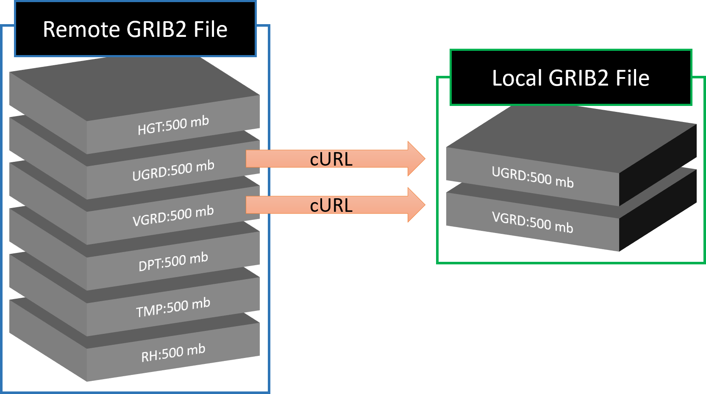

If you have not already, please register as a user before downloading data. Citation details can be found at the bottom of this page
You may write your own script to automate the download process, but PLEASE do not download an excessive number of files in a short period of time on multiple nodes (you agreed to not do this when you read the Best Practices).
HRRR GRIB2 files are large. sfc files are >100 MB and prs files are >380 MB each. If you download a day's worth of prs analyses, thats over 9 GB!
GRIB2 files are downloaded from the URL
Metadata for each file can be viewed from the same URL except with .idx appended to the grib2 file name
The model type and variable fields available include:
- [model type] hrrr for the operational HRRR
- [fields] sfc
- [fields] prs
- [fields] subh (sparse availability, if any)
- [fields] nat (sparse availability, if any)
- [model type] hrrrX for the experimental HRRR
- [fields] sfc
- [model type] hrrrak for HRRR Alaska
- [fields] sfc
- [fields] prs
- [fields] sfc
[YYYYMMDD] represents the UTC date format (e.g. 20171228).
[file name] is in the format [model type].t[00-23]z.wrf[fields]f[00-18].grib2
where the two digit number following t is the model run hour and the two digit number following f is the model forecast hour.
| Model Name | Model Type | Model Cycle | Archived Forecasts |
|---|---|---|---|
| Operational HRRR | hrrr | Hourly range(0,23) | sfc: f00-f18 or f00-f36 prs: f00 |
| Experimental HRRR | hrrrX | Hourly range(0,23) | sfc: f00 |
| HRRR Alaska | hrrrak | Every 3 hours range(0,23,3) | sfc: f00-18 or f00-f36 |
Example
https://pando-rgw01.chpc.utah.edu/hrrr/sfc/20180101/hrrr.t00z.wrfsfcf00.grib2
https://pando-rgw01.chpc.utah.edu/hrrr/sfc/20180101/hrrr.t00z.wrfsfcf00.grib2.idx
cURL download full file
curl -O https://pando-rgw01.chpc.utah.edu/hrrr/sfc/20180101/hrrr.t00z.wrfsfcf00.grib2
cURL download full file and rename
curl -o hrrr20180101_00zf00.grib2 https://pando-rgw01.chpc.utah.edu/hrrr/sfc/20180101/hrrr.t00z.wrfsfcf00.grib2
wget download full file
wget https://pando-rgw01.chpc.utah.edu/hrrr/sfc/20180101/hrrr.t00z.wrfsfcf00.grib2
cURL download single variable
GRIB files are gridded binary. They are made of "messages" or "fields" stacked on top of each other. Each field contains the data for a variable at a specific level across the model domain. It is possible to download portions of the full GRIB2 file and what you get is a valid GRIB2 file.

If you know the byte range of the variable you want (found from the .idx file), you can retrieve that single variable. The .idx> files share the same URL as the grib2, except with .idx> appended to the end. For example, from the .idx file for F00 valid at 0000 UTC 1 January 2018, we see that the byte range for TMP:2 m starts at 34884036 and ends at 36136433.
curl -o 20180101_00zf00_2mTemp.grib2 --range 34884036-36136433 https://pando-rgw01.chpc.utah.edu/hrrr/sfc/20180101/hrrr.t00z.wrfsfcf00.grib2
After inspecting the downloaded file, you will see cURL has downloaded a valid GRIB2 file with only the 2 meter temperature variable.
You could repeat the steps for different byte ranges to get different variables and append the output to a file
curl --range ######-######
Precipitation Variables
cURL download several variables
Unfortunately, the curl --range function wont work if you request more than one range. I don't know why this doesn't work, but it must be a limitation of the Pando archive. Fortunately, similar variables are usually grouped together, like U and V wind compenents, so you can request a range that spans the variables you want. This example gets TMP, POT, SPFH, DPT, RH, UGRD, VGRD, WIND at 2 meters.
curl -o 20180101_00zf00_2mTemp2mDPT10mwind.grib2 --range 34884036-44863087 https://pando-rgw01.chpc.utah.edu/hrrr/sfc/20180101/hrrr.t00z.wrfsfcf00.grib2
Details on different methods to download HRRR data with Python are on GitHub.
Python HRRR Download Examples
I use Anaconda with Python version 3. You may use this environment.yml file and find instructions on creating the conda environment on GitHub. If you are unfamiliar with conda environments, look at the README for details on how to create my environment from the environment.yml file.
Below is a summary of the examples.
How to download HRRR GRIB2 files
If you just want to download a few files, the easiest way is with the web download interface which makes downloading files as easy as clicking a button.
Most users, however, need to download a bunch of HRRR files. You will need to write a script for that. The most simple way to download a file from Pando is with urllib.request. Writing a script is as simple as changing the URL to get the files you want.
import urllib.request download_this = 'https://pando-rgw01.chpc.utah.edu/hrrr/sfc/20200624/hrrr.t01z.wrfsfcf17.grib2' save_as = 'my_file.grib2' urllib.request.urlretrieve(download_this, save_as)
I made this Jupyter Notebook for you. It demonstrates how to use my download_HRRR function to download many files from the Pando (or NOMADS) HRRR archive. All you need to give the function is a list of datetimes and forecast hours.
Jupyter Notebook: Part 1
How to download select variables from a HRRR GRIB2 file
Full HRRR files are very large (~150 MB) and that adds up quick if you need a lot of days and forecasts. Often, you only need some of the data in the file. Remember that GRIB2 data is based on messages made up of binary concatenated together. It is possible to download only the parts of the file for specific variables or "fields" that you want.
You will save a lot of disk space and improve download time if you download just the variables you need. The size of a single HRRR grid is about 1 MB.
The challenge to downloading parts of the full GRIB2 file finding the byte range for a variable you want. The beginning byte of each variable is given in the index, or .idx, file.
Partial downloads with cURL require a known byte range. The grbi2.idx ( sfc example , prs example) files are metadata text files that contain the beginning byte of each field in the file. Each grib2 file has a unique index file. To find the byte range for a variable, the above function searches for the line that contains the specified variable abbreviation and level.

My Jupyter Notebook Part 3 shows you how I do this and provide a function to download a set of variables from a HRRR GRIB2 file. Part 3 combines the functions for downloading many files and downloading subsets.
Jupyter Notebook: Part 2
Jupyter Notebook: Part 3
How to read GRIB2 data with Python
When you have a GRIB2 file, there are two key packages that read GRIB2 files. Both can be installed via conda-forge.
- pygrib is what I started to learn and still use sometimes. | Video Demo | Documentation.
- cfgrib works well reading GRIB2 data as xarray datasets. Make sure you have the latest version (>0.9.8) | Documentation
Getting Started with cfgrib
a = cfgrib.open_datasets('hrrr.t00z.wrfsfcf08.grib2')import cfgrib
The loaded data is a list of xarray dataset objects. Each item in the list is an xarray dataset for a different level. For example, entire atmosphere, height above ground, isobaric level, surface, etc.
Jupyter Notebook: Part 4
A quick note on multi-threading your downloads. It probably isn't worth it. The archive bandwidth is limited, and will cause a bottleneck if you try downloading too much (and that makes it slow for us to put new data on the archive). I tried using multiprocessing and multi-threading and found that the download speed saturates around 3 or more threads.

List and download Pando objects with s3fs
# Access Pando
fs = s3fs.S3FileSystem(anon=True, client_kwargs={'endpoint_url':"https://pando-rgw01.chpc.utah.edu/"})
# List objects in a path
fs.ls('hrrr/sfc/20190101/')
# Download the first file and rename it the same name (without the directory structure)
files = fs.ls('hrrr/sfc/20190101/')
fs.get(files[0], files[0].split('/')[-1])
This is a good method to use if you don't know the file names on Pando (such as if you are looking at GOES files), but the HRRR file names are very predictable. The following examples show how to download the files with the straightforward urllib.request and how to download a subset of a files (single variable grid) by exploiting the byte range feature of cURL.
You can use rclone to copy files from Pando to your own disk.
Configure rclone with the following settings (this should be in your .rclone.conf file)...
[publicPando] type = s3 endpoint = https://pando-rgw01.chpc.utah.edu
Then you can list buckets and files with
rclone lsd publicPando:hrrr/sfc # list a directory rclone ls publicPando:hrrr/sfc/20190101/ # list all files in a directoryAnd rclone has ability to copy files from Pando to your home directory.
dx = 3000,
dy = 3000,
map_proj = 'lambert',
ref_lat = 38.5,
ref_lon = -97.5,
truelat1 = 38.5,
truelat2 = 38.5,
stand_lon = -97.5,
Latitude and longitude for every HRRR grid point is defined as part of each grib message. The values for each grid are not stored for each grid box (that would take a lot of memory), but are calculated by the wgrib2 utility with the stored projection information.
If you are using pygrib, you can get the variable data, latitude, and longitude like this: value, lat, lon = grbs[1].data()
For convenience and some unique applications, I created an HDF5 file that contains just the HRRR latitude and longitude grids. HRRR_latlon.h5
If you are dealing with a vector quantity, like wind direction, you need to convert the U and V wind component from grid-relative to earth-relative to correctly orient the wind vectors.